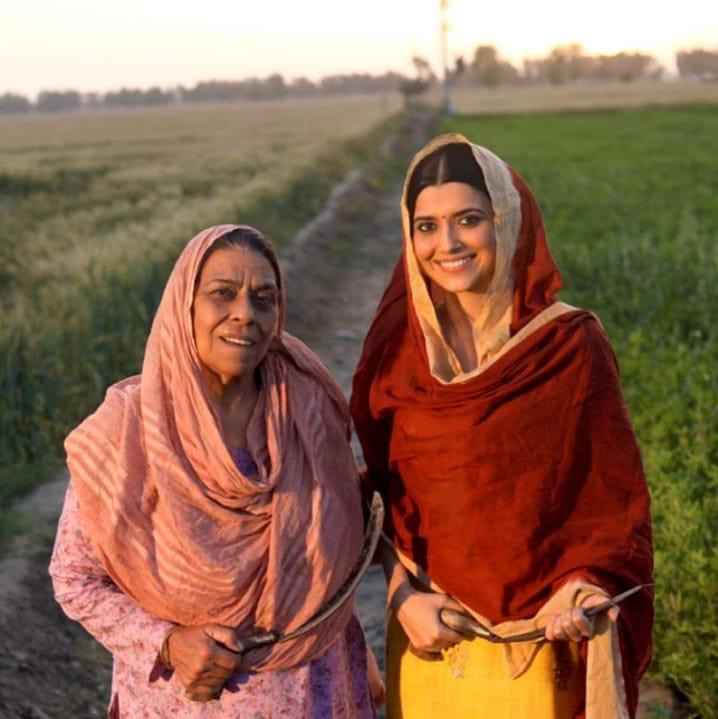

{kind=link}
Clothing and Attire in Sikhism and Punjabi Culture
Punjab, a vibrant region rich in tradition and culture, is renowned for its distinct and colorful clothing. The attire reflects not only the region's rich heritage but also its practical needs, spiritual values, and cultural pride.
Traditional Punjabi Attire
Punjabi Clothing is vibrant,comfortable, and suitable for the agrarian lifestyle historicallly prevalent in the region. While these garments have evolved over time, they continue to symbolize the spirit and identity of Punjab.For Men:

- Kurta and Pajama:A simple yet elegant combination,the kurta (a long tunic) and pajama (loose trousers) are the most common attire for Punjabi men. They are often made of cotton for everyday wear and silk or brocade for special ocassions.
- Chadar: A light shawl or cloth, the chadar is often draped over the shoulders for an added layer of grace and practicality.
- Pagri (Turban):The turban is an essential part of a Punjabi man’s attire, especially for Sikhs. It is not just a cultural symbol but also a mark of respect, honor, and religious identity.
For Women:
- Salwar Kameez:The salwar kameez is the quintessential Punjabi outfit for women. It consists of a kameez (long tunic) paired with a salwar (loose-fitting pants) and is complemented by a dupatta (scarf). The vibrant patterns, intricate embroidery, and bright colors make it both functional and stylish.
- Phulkari Dupatta:The Phulkari, or "flower work", is a traditional embroidery style unique to Punjab. A phulkari dupatta adds a touch of elegance and cultural heritage to the ensemble.
- Ghagra: In some parts of Punjab, especially for festive occasions, women wear a ghagra ( a flared skirt) paired with a kameez or choli (blouse).
Contact Us
Required fields are marked with an asterisk*